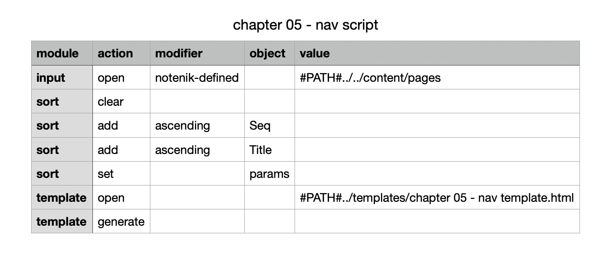

5.2. Navigating between pages ↑
5.2.1 The nav template
The first template file, named chapter 05 - nav template.html, will generate our nav menu.
Here’s what it should look like (omitting any comment lines).
<?output "../includes-gen/nav-bar.html" ?>
<nav>
<?nextrec?>
<?set link-text = "=$title$=" ?>
<?if "=$title$=" eq "Index" ?>
<?set link-text = "Home" ?>
<?endif?>
<a href="=$title&f$=.html" aria-current="\=\$=$title&f$=-aria-current\$\=">
=$link-text$=
</a>
<?loop?>
</nav>
Let’s walk through this.
The output command will direct all of the output to a single file, to be named nav-bar.html, located in a new folder named includes-gen. This new folder (still located within the factory parent) will be a place where we can generate include files with one template, and then include those generated files into another template later.
The next line starts the nav menu.
Then we have the nextrec command, which signals the start of the code to be repeated for each note/page.
The next four lines create a new variable named link-text and set that to the value of the Title field, with one exception: the Index file will be called Home.
And then we have the code for the link on the next three lines. Here we’re using variables instead of literals: =$title&f$=.html for the href value, and =$linktext$= for the text to be displayed to the user.
For the aria-current value, we’re using the Title value to name a new variable, with the new variable not being replaced until the generated include file is actually used in a later template.
Then we end the loop, and provide a closing </nav> tag.
You should also find a script file named chapter 05 - nav script.tsv.
Here’s what it should look like.

Notice we’ve added some sort module actions that will sort the pages by the Seq field. This will ensure that the Home page (which should have a Seq value of 1) will appear first in the generated menu.
Double-click on this row within your Notenik project folder collection, then click on Go to run the script.
Then use your text editor to open the output nav-bar.html file in the newly created includes-gen folder. It should look like this.
<nav>
<a href="index.html" aria-current="=$index-aria-current$=">
Home
</a>
<a href="about.html" aria-current="=$about-aria-current$=">
About
</a>
</nav>
This file will be included into our page-template, which we’ll look at next.
Next: 5.2.2 The page template